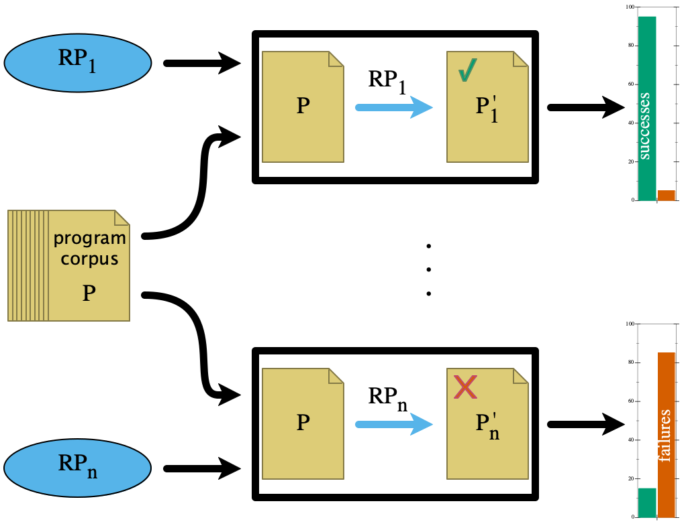
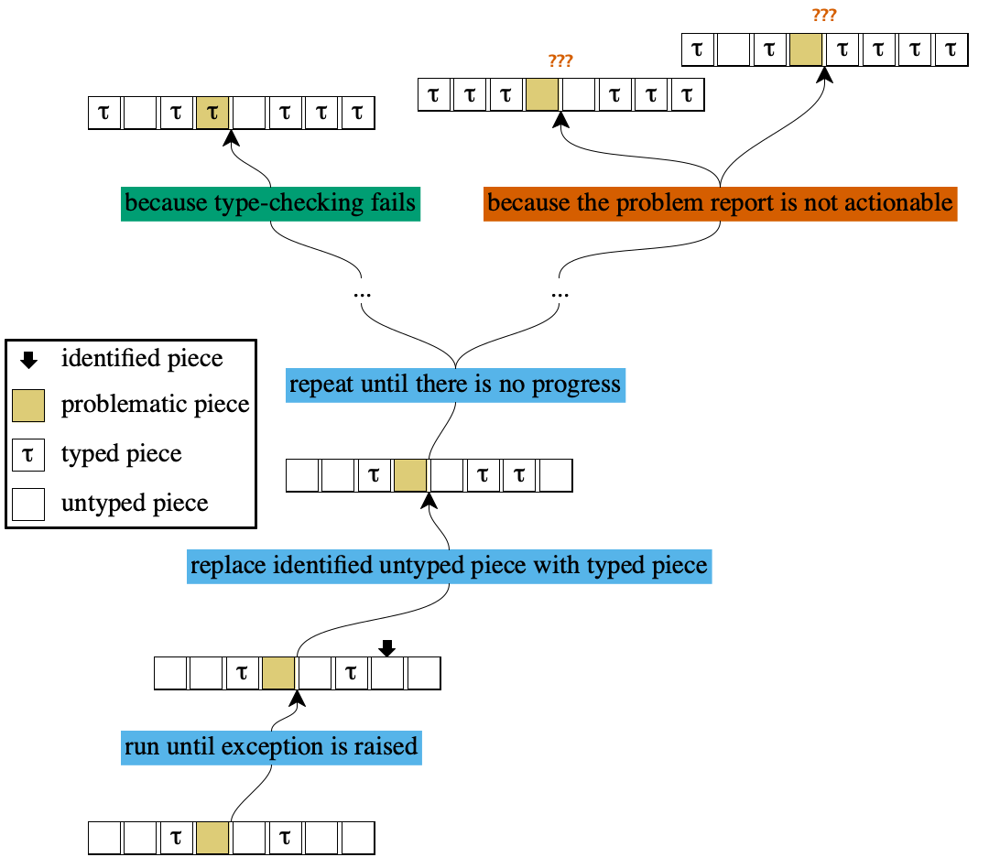
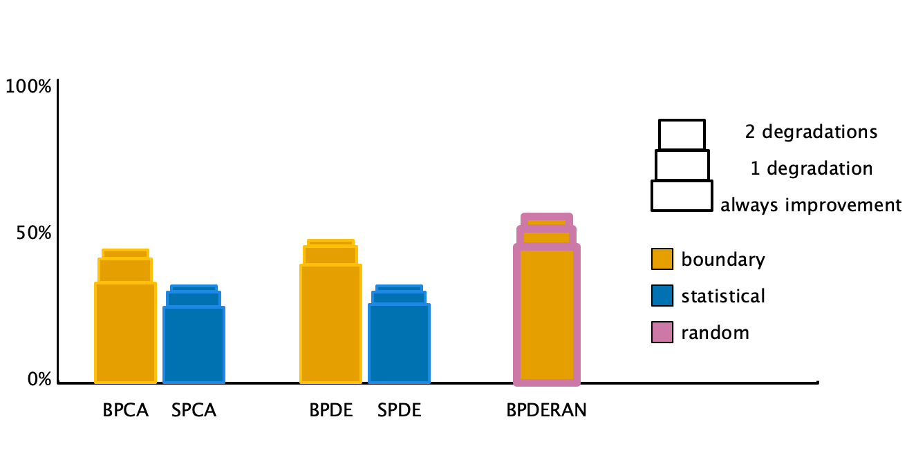
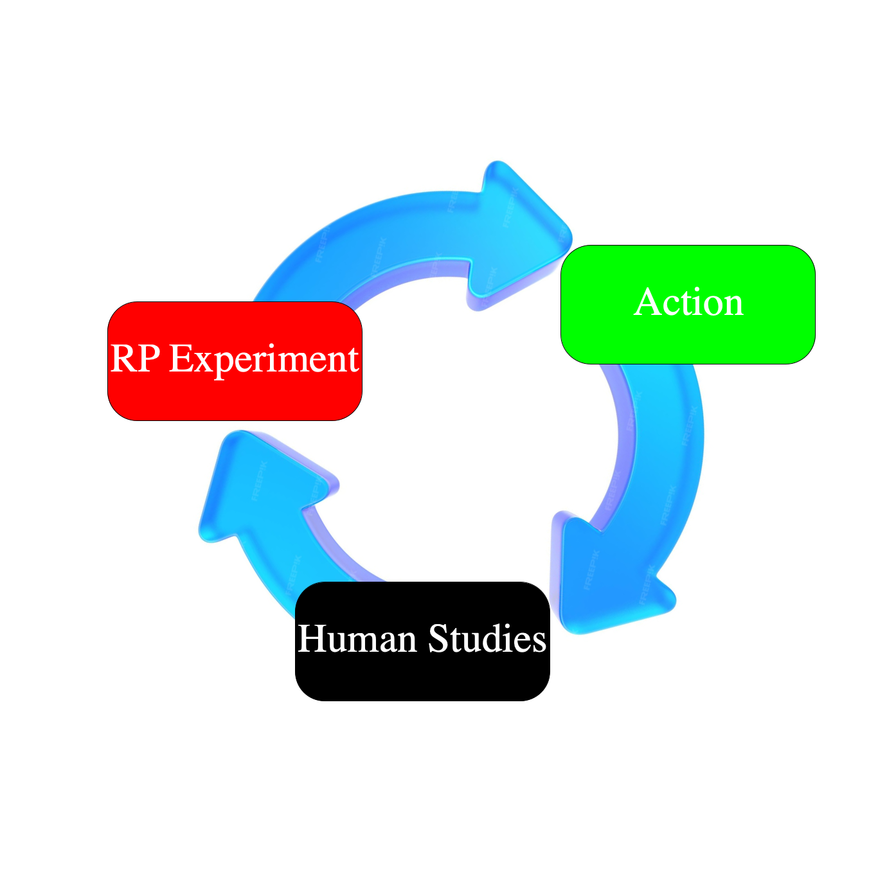

The Rational Programmer
by Christos Dimoulas & Matthias Felleisen
31 Aug 2021
Changed in version 1.4: Sat Jan 11 10:41:15 EST 2025, cyclic relationships refined
Changed in version 1.3: Mon Dec 23 15:15:10 EST 2024, cyclic relationships, !draft
Changed in version 1.2: Fri Dec 20 17:14:57 EST 2024, citations
Changed in version 1.1: Tue Dec 17 12:30:50 EST 2024: second release (CACM draft)
Changed in version 1.0: Tue Aug 31 15:23:51 EST 2021: initial release
Abstract
A software developer’s work directly depends on decisions that the creators of languages and tools make for them. Conversely, when the creators of languages and tools must choose from a number of design alternatives, they should consider how the choice affects the developers in certain work situations. Linguists dub this idea “pragmatics.” This paper presents a first method for systematically evaluating questions of programming-language pragmatics, including some surprising results concerning optional type systems, like those found in TypeScript.
Acknowledgments We thank Robby Findler, Ben Greenman, Nathaniel Hejduk, Alexis King, Caspar Popova, and especially Lukas Lazarek for their collaboration on the early rational-programmer projects. Stephen Chang contributed the example of a type mismatch in TypeScript. Matthias’s ’Kaffeeklatsch’ provided feedback on related write-ups, which influenced this paper.
The Pragmatics of Programming Languages
Every so often, someone creates or changes a programming language. In the process, these language creators make a number of design choices. They may wonder whether to check certain conditions at compile time or at run time; they may choose between a simple error system or a provenance-tracking value system for sophisticated error reporting; or they may consider an alternative set of IDE tools. Their choices directly affect the software developers who will end up using these languages and tools, and therefore creators try to make these choices with developers in mind.
To make this concrete, consider the design of TypeScript (Corporation 2025), a typed sibling of JavaScript (International 2025). Its design explicitly aims to foster interactions between the type-checked code written in TypedScript and the untyped code in JavaScript. Hence, its designers had to make a choice concerning the integrity of type annotations, specifically, whether a callback from JavaScript may apply a function of argument type number to a string. While the answer of TypeScript’s creators is “yes,” academic researchers who work on similar programming languages tend to loudly assert “no, run-time checks should prevent such misapplications.”
Making such choices should rest on solid information from a systematic evaluation. In turn, this calls for an evaluation method that can gather information about the use of a particular linguistic feature or tool in a specific situation. One concrete question could be whether run-time checks for a TypeScript-like language would help developers with locating the logical source of misapplications.
Designers should address such questions to programming language researchers, but those just study the theory and practice of languages. Concretely, researchers have studied the semantics (Siek and Taha 2006; Tobin-Hochstadt and Felleisen 2006) of mixed-type languages and their performance (Takikawa et al. 2016). The former shows that run-time checks are needed to establish a generalized form of type safety (Wright and Felleisen 1994); the latter says that run-time checks are often expensive. Neither investigation answers the question whether and how information from failing run-time checks helps developers with locating such misapplications. What the area lacks is a method for assessing the pragmatics of language features.
Linguists describe pragmatics as the study of natural-language use in context. By interpreting “context” as “work situation” the definition directly applies to the study of programming-language use. The above question is a concrete instance: types are the novel feature of TypeScript, and finding the source of a mismatch between a program’s checked type annotations and its run-time behavior is the work situation. An evaluation method should determine whether run-time checks provide information that assists with locating the source of the mismatch.
Over the past decade, the authors have developed such a method, dubbed the
rational programmer. Their first, specific goal was to investigate whether
run-time checks provide helpful information, because of their own involvement in
a TypeScript-like language. To their surprise, the results of their
rational-programmer experiments were highly nuanced: when a correct type
annotation describes buggy untyped code, the information produced by the
run-time checks is not all that helpful with finding the source of
mismatches; when the problem is due to mistaken type annotations though, the
checks help a lot; and the aspect of checking that theory research often
ignores—
The Rational Programmer
As Morris (1968) stated in his seminal 1968 dissertation, an investigation of programming languages must investigate syntax, semantics, and pragmatics. Syntax is a problem whose nature lends itself to precise mathematical and engineering investigations, and so is semantics. Researchers have therefore focused on these aspects. By contrast, pragmatics has been considered a nebulous concept, because it is about the concrete tasks that developers face when they use a language. Investigating pragmatics thus seems to call for human studies, observing how people extract information from syntax and semantics plus how people use it in different situations.
(A) syntax and semantics produce relevant information;
(B) programmers understand this information; and
(C) programmers act on this information.
Questions about the information-content of language features resemble the
questions economists faced when they began to think about the effectiveness of
interventions in the economy—
The rational programmer method is the authors’ response to the question
on programming-language pragmatics. A rational programmer is a software actor that
mechanically uses a linguistic feature to solve a specific problem.
Like homo economicus, a rational programmer is an idealization—
Technically speaking, a rational programmer is an algorithm that with a bounded effort, exploits information from one specific language feature to solve a specific problem. Concretely, it starts from a program P that suffers from a problem and acts on information to solve the problem; in the process, it is likely to edit P to obtain P’, a program variant that represents a solution. In fact, a rational-programmer experiment may involve a number of rational programmers; each algorithm corresponds to a different hypothesis of the language designers about a language feature.
Applying all algorithms to a large representative corpus of problematic programs may then yield insight into the value of the information that the investigated feature provides for this problem. Creating the rational-programmer algorithms as well as the representative scenario corpus requires problem-specific research; the experimental setup, though, remains the same. See figure 1 for an overview.

A rational programmer (RP) experiment consumes two inputs: a corpus of problematic programs P (in yellow) and a number of distinct RPs (in blue).
Each program P exhibits a specific kind of problem. For example, all programs P in the given corpus exhibit the same kind of bug or suffer from similar performance bottlenecks.
Each RP is an algorithm that extracts information from a language feature to solve the problem in the given program P. Each RP attempts to solve the problem by transforming P into a variant P’~(blue arrow). Two different RPs may act differently on the same extracted information. Or, two RPs may use different flavors of the feature, and doing so affects the information the RPs observe. In this way, each RP reifies a hypothesis about how the feature can produce helpful information in the given work situation.
The RP experiment applies all RPs to all problematic programs in the corpus and records the outcomes. Given a problematic problem P and a RP, each outcome is either a success or a failure. An analysis of the collected outcomes explains how well different RPs perform. In short, the experiment puts to test and compares a number of hypotheses about programming-language pragmatics in an automated fashion.
Figure 1: A schematic overview of the rational-programmer experiment
In sum, the rational-programmer method employs large-scale experimentation with idealized behavior to check hypotheses about the information content of language features. While Pragmatics of Language Features illustrates the idea with a concrete experiment, Pragmatics of Language Tools showcases how rational-programmer experiments can answer questions about the pragmatics of tools. Concerns of Pragmatics are Ubiquitous generalizes the approach beyond the two examples above by sketching some more areas of pragmatics investigation and Rational Pricing of Pragmatics examines the labor involved in implementing such investigations. From Pragmatics to Action and From Rational to Human Programmers relate the rational programmer to human programmers in two different ways, and It is not a Straight Line synthesizes the two. The document concludes with a call to arms.
Pragmatics of Language Features
Bank.js
var balance = 0;
export function deposit( amt: number ) {
balance += amt;
}
export function printBalance() {
console.log("balance: " + balance);
}
Client.js
const Bank = require('./Bank.js');
// logically correct interaction
Bank.deposit( 100 );
Bank.printBalance();
// logically incorrect interaction
Bank.deposit( " pennies!" );
Bank.printBalance();
This simplistic program illustrates a type-mismatch problem. The code in the upper box is a TypeScript “module” that implements a simple bank account module. The code in the lower box is a JavaScript client “module” that imports the bank account functionality.
The first call to deposit supplies a number as an argument; the follow-up call to printBalance correctly prints ’balance: 100’.
The second call to deposit supplies the string "pennies". Neither the code generated by the TypeScript compiler nor the JavaScript VM signal an error even though the type specification explicitly requests a number. The final request to see the balance prints ’balance: 100 pennies!’—
a wrong answer with which no customer would be happy. Figure 2: A simple type-mismatch problem between JavaScript and TypeScript
The rapid development of mixed-typeThe term “mixed-type” covers optional type systems~ (Steele 1990); plug-in type systems~ (Bracha and Griswold 1993); gradual type systems~ (Siek and Taha 2006); and migratory type systems~ (Tobin-Hochstadt and Felleisen 2006). languages over the past decade sets up a perfect example of how the rational-programmer method can yield surprising insights. A mixed-typed language allows programmers to mix typed and untyped pieces of code in a single program. This mixing can happen in many different ways, but most frequently a programmer may link a typed piece of code to an existing untyped library in the same language or a programmer may write an untyped script that imports a typed module.
Microsoft’s realization of this idea in the form of TypeScript has taken the developer world by storm. Many web developers reach for TypeScript instead of JavaScript, because they like types and they can easily continue to link to the many useful, pre-existing and untyped libraries. On the academic side, Typed Racket~ (Tobin-Hochstadt and Felleisen 2008) is the most robust realization of the idea. It has found some use in the real world, has extensive application in academia, and thus provides a solid platform for programming language investigations.
The designs of TypeScript and Typed Racket share similarities and yet differ in ways that inspires a rational-programmer experiment. Their type systems resemble each other closely. Both use occurrence typing~ (Tobin-Hochstadt and Felleisen 2010), and both come with sophisticated types for object-oriented programming~ (Takikawa et al. 2012). Concerning their semantics they differ in that they deal with type mismatches rather differently. A type mismatch occurs when untyped code and typed code exchange values that do not conform to the specified types.
A reader may wonder how a well-typed program can possibly go wrong~ (Milner 1978). It is of course not the typed code alone that causes type mismatches but the mixing of typed and untyped code. When such a mixture runs, untyped code can send a value into typed code that does not match the expected type. In the TypeScript world, a first, well-known cause is that the types imposed on untyped code are flawed. For example, the DefinitelyTyped repositorySee DefinetelyTyped collects modules that import untyped libraries and re-export them with type specifications so that TypeScript can type-check the importing module. In most cases, these adapter modules are programmed by developers other than those who created the libraries. Unsurprisingly, this approach results in flawed type specifications. Researchers (e.g. (Cristiani and Thiemann 2021; Feldthaus and Møller 2014; Hoeflich et al. 2022; Kristensen and Møller 2017)) have investigated this problem and have found numerous such flaws. A second cause is dual to the first; the untyped code suffers from bugs. That is, the code fragment is supposed to live up to some type specification but a bug occasionally causes a type mismatch at run time. See figure 2 for a TypeScript example.
Given the possibility of type mismatches, a language designer can choose one of a few alternative checking regimes:
Ignore them.—
The compiler checks and then erases types as it translates a program. The resulting code performs no run-time checks to enforce type integrity. If, for example, some untyped library calls an integer function with "42", the mismatch may never be discovered during execution. The literature dubs this approach erasure semantics. TypeScript is the most prominent design using an erasure semantics. Notice them as early as possible.—
The compiler translates types into run-time checks that enforce their integrity. When these checks fail, they raise an exception. Consider an untyped library that accidentally calls back a string-typed function with the number 42. The explicit run-time checks of this second alternative are going to notice this problem as soon as it happens and the exception-associated stack trace is going to be close to the problem-discovery point. Notice them and try to pinpoint a source.—
The Typed Racket compiler can go even further and associate a message with these exceptions that assigns blame to a specific piece of untyped code, warning developers that this blame is useful only if the corresponding type specification is correct.
which checking regimes deliver helpful information for locating the source of type-mismatch problems?

The experiment confronts a rational programmer (RP) with a problematic program (bottom left), that is, a program with one known type mismatch (in yellow). The RP runs the program using its chosen run-time type checking regime until it raises an exception, whose report points to an untyped piece as the source of the problem.
The RP then replaces the identified untyped piece with its typed counterpart and runs the program again.
This process is repeated until the component that causes the type mismatch becomes typed (top left) forcing the type checker to signal a type error, or until the problem report does not come with actionable information for the RP. In the first case, the type error exposes the problem and the search succeeds; in the second case, it fails.
Figure 3: How a rational programmer searches for the source of a mismatch
Setting up a truly scientific experiment requires that everything except for the run-time checking regime of the investigated language remains the same. At this point, Typed Racket~ (Greenman 2022) is the only language that satisfies this desiderata because it implements all three alternative checking regimes.
Equipped with a suitable experimental environment, preparing a rational-programmer experiment Racket is a two-step process. Step 1 calls for the identification of a large, representative corpus of problematic programs. To mechanize the experiment properly, a problematic program should be one with a single, known type-mismatch problem so that the experimental framework can automatically check the success or failure of a rational programmer. Furthermore, the problem should be a mis-specification of a type or a bug in an untyped piece of the program. No such ready-made corpus exists but it is possible to create such a corpus from a representative collection of correct programs~ (Greenman 2023). Starting from this collection, applying appropriate mutation operators~ (DeMillo et al. 1978) yields millions of suitable problematic programs; selecting a representative sample of tens of thousands supplies the corpus. For the statistical analysis of the selection, the reader may wish to consult the already-mentioned papers.
Step 2 demands the translation of hypotheses into rational programmers. Since the goal is to find out which checking regimes deliver helpful information for locating the source of type-mismatch problems, a rational programmer should try to strategically squeeze as much information from such checks as available.
Each rational programmer implements the same strategy, parameterized over the checking regime. The strategy is to run the program P until execution stops due to an exception and to then inspect the available information from this failure. In one way or another, these exceptions point to an untyped piece of code. By equipping this piece with types, a rational programmer obtains P’, which it tries to compile and run. If type checking P’ fails, the experiment is a success because the type-mismatch problem has been discovered statically. Otherwise, P’ type-checks and running it again re-starts the process. A rational programmer declares failure when it cannot act on the available information. See figure 3 for a diagrammatic summary.
A key detail omitted from the diagram is how the rational programmers equip
pieces of untyped code with types. As it turns out, each of the programs in the
chosen collection~ (Greenman 2023) comes in two forms: typed and untyped.
Moreover, all typed and untyped pieces can be mixed seamlessly—
[Erasing] The erasure semantics may assign a program with a type-mismatch a behavior that is seemingly normal or that triggers an exception from the underlying virtual machine. Since such exceptions come with stack traces, the Erasing rational programmer can inspect this trace and replace the untyped piece of code closest to its top.
[Exceptions] When Typed Racket’s run-time checks fail, they also display a stack trace. Like the Erasing rational programmer, the Exceptions one replaces the top-most untyped piece of code with its typed counterpart.
[Blame] The Blame programmer exploits the blame assignments that come with Typed Racket’s failing run-time checks. It replaces the blamed piece of code with its typed version.
[Null] The null-hypothesis programmer randomly chooses an untyped piece of code. This NULL rational programmer always finds the problem (S1: 100%), because it eventually replaces all pieces of code with their typed versions. But, to get there, it may have to replace many untyped code pieces (S2: usually a large count).
When the bug is located in the type specification imposed on untyped code, the conjectured benefits are confirmed. Blame locates almost all of the problems. By contrast, Erasing finds just over half of the problems. Exception performs as badly as Erasing.
When the bug is located in the untyped code, the expected benefits disappear. While Blame supplies information that is somewhat better than Exception and Erasing, the three differ only a little.
Concerning the effort (S2), all strategies need significantly fewer replacements than Null. Its existence thus confirms that the other three algorithms deliver useful information. Unsurprisingly, Blame fares the best; it needs the smallest number of replacements.
In sum, Blame provides the most helpful information for locating the source of problematic type specifications for untyped pieces of code. Exceptions is essentially only as helpful as Erasing. For bugs in untyped code that cause type mismatches, the advantage of Blame over the others shrinks substantially.
Theoretical publications on mixed type languages focus on run-time checking. But, the investigation indicates that, for a broad variety of type mismatches and benchmarks, a language using an erasure semantics discovers and locates most of the type-mismatch problems anyways.
Many theoretical papers ignore the blame assignment part of run-time checking. But, the investigation shows that it is the key element to making run-time checks informative.
Caveats While these large-scale simulations look impressive, their interpretation must take into account that they apply only to Typed Racket. Its underlying untyped language, Racket, enforces strict pre-conditions for each of its primitives, which has significant implications for when and how the erasure semantics delivers information. By contrast, JavaScipt, the language underlying TypeScript, enforces lax pre-conditions. In all likelihood, lax enforcement in the underlying language will make a run-time checking regime more effective than in a Racket-like setting. The only way to check this conjecture is to reproduce the experiment with TypeScript.
As for every empirical investigation, the rational-experiment described in this section comes with technical caveats such as whether the corpus is truly representative; whether the statistical sampling is appropriate; or whether the presence of more than one bug affects the search and how. To mitigate them, the design of the experiment comes with an array of checks and controls. For instance, the experiment’s corpus originates from correct programs that are written by different developers for different purposes and exhibit a variety of programming styles. They also vary in terms of language features, complexity and size. Moreover, the mutants of these correct programs that form the experiment’s corpus have been mechanically analyzed to confirm their suitability; they contain a wide range of non-straightforward type mismatches that structurally resemble issues reported by Typed Racket programmers. For an account of how the experimental design mitigates the technical caveats, the reader may wish to consult the papers by Lazarek et al.
Pragmatics of Language Tools
The run-time type checks for mixed-type code comes in several flavors. All of them impose a significant performance overhead (Greenman and Migeed 2018; Greenman et al. 2019). Indeed, in some cases the injection of a single type specification causes a rather large slowdown. Over the past ten years, Greenman (2023) has collected and curated two dozen Typed Racket programs with just such performance problems and they can serve as a corpus of problem scenarios for a rational-programmer experiment.
A conventional statistical profiler allocates costs to functions based on inspecting the run-time stack every so often. Since these run-time checks are functions, the tool may in principle supply helpful information.
The feature-specific profiler (FSP) (Andersen et al. 2019) allows developers to collect performance information about specific linguistic elements in a program. It is useful when a single-source feature comes with performance cost that is incurred in many different places such as the proxies used with deep checking. Again, since this condition applies to the kind of checks that Typed Racket injects at the boundary between typed and untyped code, the tool’s information should come in handy for performance problems caused by the checks.
At this point, the question is clearly which of the two tools provides the most helpful information for performance debugging.
which combination of profiling and strategy delivers the most useful information for debugging performance problems in mixed-type programs.

The experiment confronts the rational programmers (RPs) with a performance debugging scenario, that is, a program whose performance suffers due to run-time type checks. Each RP interprets feedback from a profiling tool to modify the type annotations of the scenario in an attempt to improve its performance. For instance, the BPCA RP uses the FSP to find the most costly type boundary, and flips both of its sides to either shallow or deep checking, depending on the number of typed pieces in the scenario. It repeats this process, until there is no improvement (with retries) or no actionable information.
The plot depicts five skyscrapers (x-axis) whose height (y-axis) indicates the success rate of each RP. Each skyscraper has three levels that correspond to three increasingly looser notions of success. The bottom level requires that the RP always improves the performance of a scenario until it achieves its goal (strict success). The other two levels of the skyscrapers relax this notion of success to allow for one or two performance degradations along the way.
The yellow skyscrapers correspond to RPs that rely on the FSP. They tower the blue ones, which correspond to those that rely on the statistical profiler. In fact, the BPDEBRAN skyscraper points to the most successful strategy; it uses the FSP to find the most costly type boundary and adjusts both of its sides to use deep checking. When the profiler does not provide actionable information, it adjusts a random boundary before retrying with the FSP.
Figure 4: The plot result of the rational-programmer profiling experiments
In order to understand the feasible strategies in this work context, it is necessary to take a close look at the nature of run-time checks. The regime from the preceding section performs “deep” checks. “Shallow” checking is an alternative regime, based on the transient semantics of Vitousek et al. (2014), which exclusively injects protective checks into typed code. When a value flows from the untyped to the typed side and vice versa, deep checking enforces that that every member of a list conforms to the specified type, say int. By contrast, a shallow check merely inspects the tag of the list, ensuring that it is a list; when typed code extracts a value from such a list, a second shallow check enforces that it is an integer. The biggest difference between the two concerns objects and functions. Deep checking wraps the object in a proxy and thus checks every interaction between the object and any context; shallow checking just inspects the tags of method and field access results in typed code to ensure they conform to the type specification.
Unsurprisingly the two enforcement regimes impose rather different run-time costs. In the case of shallow checking, the cost goes up proportionally with the number of type annotations added to a mixed-type program (Greenman and Migeed 2018). The worst-case cost is an order-of-magnitude slowdown. While such a slowdown may sound prohibitive, deep checking can impose an even larger cost in some cases (Greenman et al. 2019). At the same time, the strong guarantees of deep checking enable many (ahead-of-time) optimizations of typed code, which ends up benefiting fully typed programs significantly. That is, deep-checking types may impose a high cost when only a few pieces of code are typed, yet as more of the code base gets migrated to the typed variant of the language, the optimizer reduces this cost and may even realize performance gains compared to the fully-untyped program.
Assuming a language such as Typed Racket, which implements both enforcement regimes and allows easy toggling between them, this description suggests strategies that account for the number of type annotations in the program. When the program contains only a small number of typed code fragments, a developer may wish to react to performance problems by adding shallow-checked type annotations. Carefully increasing typed regions of code might decrease the friction between typed and untyped pieces; a profiling tool can supply the information which region should be converted from untyped to typed. As the number of type annotations goes up, shallow checks increase the performance cost and the optimizations enabled by deep checking might just pay off.
So here then are four rational programmers that use the two profiling tools with two different strategies:
[BPCA] finds boundaries via FSP profiling and changing them in a configuration-aware manner. It inspects the profiling information to find the boundary between typed and untyped code that causes the most friction. If fewer than half the pieces of the program are typed, it replaces the untyped piece with its typed counterpart and instructs Typed Racket to use shallow checking; if more than half the pieces are typed, it opts into deep checking. As in the preceding section, the experimental setup repeats the process.
[SPCA] uses the statistical profiler in a configuration-aware manner. It differs from BPCA only in that it relies on profiling information from the statistical profiler.
[BPDE] uses information from the FSP and always opts for deep checking, optimistically hoping for pay-off from Typed Racket’s type-driver optimizer.
[SPDE] is analogous to BPDE but uses information from the statistical profiler.
Here failure is less obvious than in Pragmatics of Language Features. One possibility is to stop when the profiling feedback contains no boundary between typed and untyped code, but this situation is extremely rare. Another one is to say that the rational programmer continues as long as it improves the performance of the program; or, it even overcomes one, two, three or more setbacks in terms of overall performance.
Boundary profiling delivers significantly better information than then statistical profiling for all strategies.
The strategies opting for deep checking get better results than those opting for shallow checking.
This second result is in conflict with the work of Greenman (2022), which motivates the construction of a shallow-checking run-time for Typed Racket.While Greenman’s measurements are correct, they use only a select plane in the 3N space of code pieces (for N pieces of code), and this explains the surprising discrepancy.
[BPDERAN] is like BPDE but replaces a random untyped piece of code when BPDE cannot make progress.
(3) BPDERAN is 10% more successful than BPDE.
Caveats The results look decisive; every mixed-type language should have some form of FSP tool in its IDEs. But, the same caveats as in the preceding section apply. In particular, the results of the rational-programmer experiment are valid for a single programming language: Typed Racket. Before these results are re-produced in at least one other language, the conclusion must be taken with a grain of salt.
Additionally, this tool evaluation comes with the caveat that results for individual programs from Greenman’s collection look different from case to case. They essentially come in three classes: those for small programs with low-ratio of configurations with performance issues; those for large ones with double-digit slowdowns; and finally a pair of programs that come with a large number of truly hopeless performance problems. For details about such technical caveats and how they affect the lessons learned from the experiment, the reader may wish to consult the above-mentioned paper.
Concerns of Pragmatics are Ubiquitous
The preceding sections illustrate the rational-programmer method through the investigation of two concerns: (1) the various semantics of mixed-type programs and the problem of finding the source of type-mismatch problems; and (2) the performance implications of these semantics and the problem of debugging bottlenecks. The presented results partially contradict and partially confirm hypotheses based on theoretical research and empirical anecdotes.
This section reports some of the authors’ experience with related pragmatics concerns and sketches how to go beyond. Concerns of pragmatics exhibit tremendous variability: the linguistic features or tools considered; the work situations; and the chosen programming language.
do assertions and contracts deliver helpful information for locating the source of different classes of logical bugs?
Again, the results of running a rational-programmer experiment are somewhat surprising. While an early variant of the rational-programmer experiment seemingly validated the folklore wisdom behind software contracts (Lazarek et al. 2020), it lacked a NULL hypothesis. A subsequent reproduction run of the experiment with a NULL-hypothesis rational programmer appears to weaken the evidence (Lazarek 2024).
which strategy of adding contracts to a program reduces the number of (unit) tests most while still obtaining a comprehensive test suite.
whether the choice of borrow-checking algorithm affects the expressive power of the Rust language.
The structure of rational-programmer experiments remains similar across the presented spectrum of pragmatics concerns. For each of them the experimenter must answer the following questions:
Do variants of the same feature or tool exist?
Is it possible to create rational programmers for each of the hypotheses about the information that the investigated feature or tool produces?
Is the success for these rational programmers decidable?
Does a representative corpus of problematic programs exist or can it be generated? Each member of this corpus should exhibit one known relevant problem.
Rational Pricing of Pragmatics
Rational-programmer experiments are costly in terms of human labor. These costs come in three different flavors: alternative implementations of features and tools; the experimental platform; and intellectual innovations in the investigated domain.
First, an experiment usually requires the implementation of two or more variants of a language feature or tool. When such implementations do not exist, new implementations for the sake of the experiment rarely need to meet production-level standards; prototypes tend to suffice. When multiple production implementations exist already, as is often the case with tools, this cost reduces to prototyping the space of usage strategies. In other words, this cost is analogous to the labor expended by designers and engineers in other fields when they create prototypes to test design hypotheses.
Second, the construction of the experimental framework requires labor. The size of the experimental corpus, the number of the rational programmers, and the complexity of the usage strategies calls for a sophisticated infrastructure. Specifically, the infrastructure should assist with breaking the experiment into piecemeal tasks so that a run of an experiment can take advantage of clusters to execute tasks in parallel. As a run produces information, it should be possible to automatically perform validity checks so that problems with an experiment are discovered as early as possible.
Although the workflows and tasks of rational-programmer experiments vary, the
authors’ experience indicates that different classes of experiments can share
large pieces of the infrastructure—
Third, each experiment poses two intellectual challenges: turning
hypotheses into rational programmers and constructing the experimental
corpus. For the first challenge, if two experiments share an aspect of
their combination of feature
and work situation
—
Ultimately though, these intellectual challenges and their solutions are tied to the domain of pragmatics concerns at hand. Even for the experiment concerning mixed-type languages, two different sets of mutation operators were needed: one for injecting bugs while respecting the type discipline, and another one for modifying type specifications while preserving the ability to run the program. In the end, rational-programmer experiments do ask for ingenuity and creativity.
From Pragmatics to Action
Pragmatics of Language Features, Pragmatics of Language Tools and Concerns of Pragmatics are Ubiquitous sketch how rational-programmer experiments can validate that particular uses of language features deliver intrinsic, task-specific information. Once this validation is available, the question arises what can be done with it. Two obvious ideas come to mind: (1) language designers can use this information as one factor in making decisions; and (2) university instructors can leverage the information for course designs.
Language designers tend to weigh design alternatives against each other. The creators of TypeScript in all likelihood considered the most basic choice, namely, whether the integrity of type annotations should be enforced at runtime; they chose not to add run-time checks because they imagined a work situation in which developers are focused on performance. If they considered the work situation of finding the source of type-mismatch problems in DefinitelyTyped libraries instead, they might wish to reproduce the rational-programmer experiment from Pragmatics of Language Features. Assuming this reproduction were to yield similar results, it would suggest making run-time checks available as an optional debugging aid.Offering both may be necessary because the run-time checking implementation occasionally imposes a large performance penalty (Takikawa et al. 2016).
prototype the variants of the corresponding feature or tool;
turn their ideas about the task-specific information of the variants into rational programmers to run an experiment;
use positive results to enrich the documentation or to construct tools that support proper usage strategies; and
feed negative results into a re-design step.
University instructors tend to present syntactic and semantic concepts in typical courses on the principles of programming languages, sometimes informally, other times via implementations or formal models. But, they know they should also teach about pragmatics concerns, which is what the typical lectures on lexical versus dynamic scope for variable declarations illustrate; it is easy to explain how lexical scope enables modular reasoning about variable references and dynamic scope interferes with it.
When students return from internships or co-ops, at least some will have
experienced type mismatch problems in the context of TypeScript. An instructor
can take this experience as a motivation to contrast the official design
rationale of TypeScript—
From Rational to Human Programmers
how well programmers can apply their training, and
whether doing so makes them more effective at the particular task than untrained programmers.
The general point is that successful rational-programmer experiments do not replace human studies. In fact, rational-programmer experiments and human studies are complementary as they investigate related but distinct facets of how programming languages ideas can benefit developers. While the rational programmer is concerned with the presence of potentially useful information in features and tools in a given work situation, human studies examine whether human developers can extract, interpret, and effectively use that information. In a sense, the relationship between the two can be viewed as analogous to the relationship between classic and behavioral economics (Tversky and Kahneman 1992): human studies can contradict some of the predictions based on rational-programmer experiments and thus help researchers identify weaknesses in classic models. Strictly speaking, rational-programmer experiments directly suggest human studies by refining hypotheses, corresponding usage strategies, and a corpus of programs to examine from a human-factors perspective.
In some cases, researchers do not need rational programmer experiments; they can intuit that language features deliver pragmatics information that entail an obvious use, and can evaluate their intuitions with simple experiments. Key is that such intuitions can be translated into a tool designed around highly-structured, limited dialogues with the developer. Consider the interactive fault localization tool of Li et al. (2018). The developer asks the tool for help with finding a bug in a program, and the tool responds with facts about the most suspicious parts of the code. The developer reacts to the facts by marking them as expected or unexpected. The tool uses this feedback to refine its fact generation until, after a number of dialogue steps, it produces a single fact that directly identifies the bug. The limited, structured way that developers interact with such tools points to the way for evaluating them via simulation. Specifically. Li et al. simulate the usage of their tool with an oracle that provides always-perfect feedback as a substitute for user reactions. Similarly, to evaluate their tool for locating faults in spreadsheets, Lawrance et al. (2006) construct a stochastic model of user reactions based on data collected from human users.
In other cases, the existence of pragmatics information is clear, and human-subject studies can directly help understand how developers can beneficially react to the pragmatics information. The work of Marceau et al. (2011) is a good example. It exposes a direct relationship between the quality of error messages of some instructor-chosen teaching language and the process of eliminating errors by novice programmers. Concretely put, they report how subjects fix mistakes in programs much more quickly when the error messages (1) use the same terminology as the text book and (2) explain themselves (via a color scheme) in terms of pieces of the students’ code. Similarly, Alimadadi et al. (2016) study the value of a new debugger for understanding asynchronous JavaScript code via the observation of professional developers. Their work shows that developers fix code much more quickly with the help of the novel tool when compared to a control group without access.
It is not a Straight Line
First formulate hypotheses about how programmers can extract information from this feature (tool) in the given situation, turn those hypotheses into rational-programmer experiments, and run those.
Second, assuming the experiments show some positive results, articulate the rational-programmer hypotheses as strategies that can be taught to programmers.
Third, use human studies to confirm that programmers can use these strategies effectively when asked to do so for the investigated work situation. Alternatively, use human studies to check whether programmers do use a strategy if given a choice to fix a problem any way they see fit—
either with or without the strategy they are taught.
Imagine that human studies for a range of programmers cannot confirm that the extracted strategies work. Two possibilities come to mind. First, the second step failed. While the experiment confirmed the existence of useful information in the given work situation, the articulation and/or the instruction as a strategy that human programmers can use has gone awry. If so, the results of the human studies call for backtracking to the second step.
Second, the researcher may observe that human programmers use a different
strategy or mix in additional elements to find the desired results. Concretely,
a human study of debugging type mismatches may inform the subjects of all the
code that was recently added and of the unit tests that began to fail as a
result of these additions. The subjects may add types—
In short, the four phases are in a cyclic relationship, not a linear one. Figure 5 displays a diagram of this cycle. The reader should pay special attention to the backtracking possibilities. In particular, if human studies do not work out, a language designer or tool implementer should also consider the possibility that the added language feature or the strategy-tool combination are faulty. In short, failures in this cyclic research arrangement may call for designers to go back to the drawing board and to start over.

Figure 5: A Cyclic Relationship: Design, Rational-Programmer Experiments, Instruction, and Human Studies
Pragmatics, the Neglected Question
to focus on one feature;
to observe its role in one task; and
to get as much information as possible for this combination.
From this angle, the rational programmer is a model. Language researchers know
that despite their simplified nature, models have an illuminating
power, in both theory and practice. When the typical POPL paper states a theorem
about, say, the soundness of a type system, it does not claim that it
applies to a language implementation and its vast set of libraries. Instead, the
paper simplifies this system down to a small mathematical model, and the theorem
applies to just this model. Yet, despite this simplification, theory has provided
valuable guidance to language designers. Similarly, when the typical PLDI paper
reports run-time measurements for a new compiler optimization, the authors have
highly simplified models of program execution in mind. As Mytkowicz et
al. (Mytkowicz et al. 2009) report, ignorance of these simplifications can
produce wrong data—
In the same way, rational-programmer experiments of pragmatics can confirm
the presence of potentially useful information in language
features and tools. They do yield results of different qualities depending
on the specifics of their rational programmers. In some experiments, as the
one in Pragmatics of Language Features illustrates, a rational programmer acts
radically differently from a human programmer. While the first exclusively
exploits the addition of types to the program to gain information about
the type-mismatch location, the second is in all likelihood going to use
many different sources, including plain hunches. The experiment does
indicate that human programmers might benefit from adding types, if they
are willing to spend the effort of formulating them, and if the bug is
located in type specifications. By contrast, for other experiments, both
the rational and the human programmer are certain to take some similar
steps reacting to a problem—
The rational-programmer method cannot confirm the absence of useful information. By its very definition, a pragmatics experiment is about the use of features and tools in specific situations. Hence, the data gathered concerns a specific use case. While generalizing from this use case would violate basic principles of science, such lack of pragmatics information in an experiment still enables language designers and instructors to draw valuable lessons about use strategies, and to check into the improvement of features and the construction of supporting tools.
For now, the rational-programmer method is the first reasonably general approach for assessing whether linguistic features and tools can deliver helpful information with software development tasks. The authors’ hope is that others will be inspired to conduct similar experiments; to reflect on the question of pragmatics; and to develop additional evaluation methods for this central concern of developers and language creators.